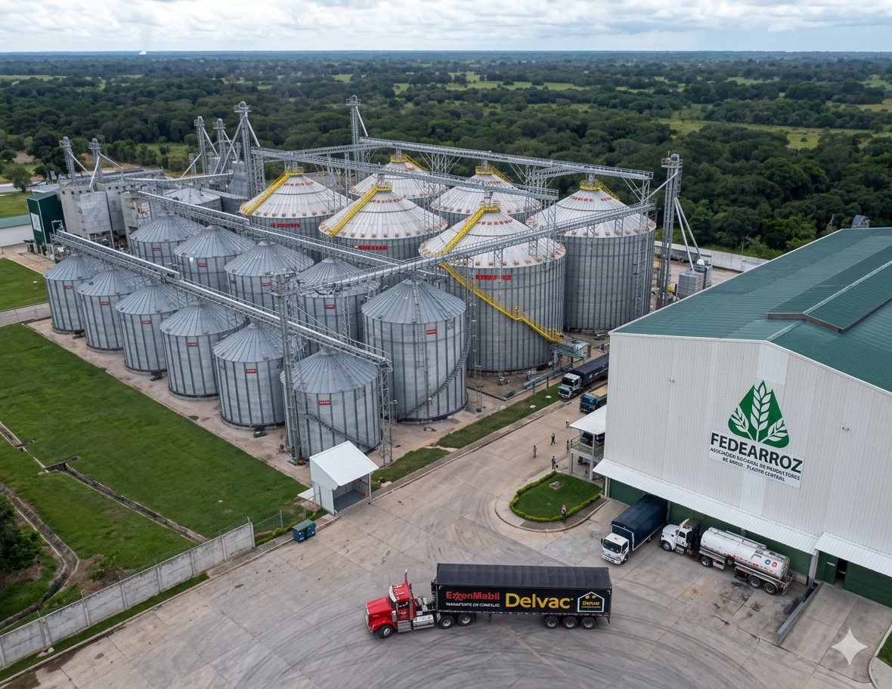
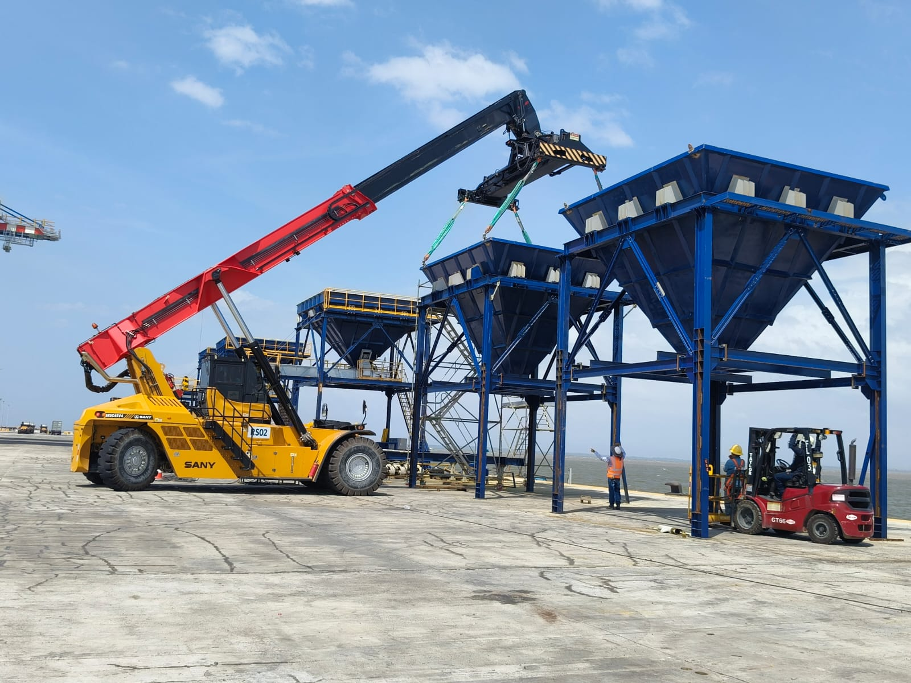

Más de 50 años brindando soluciones a la agroindustria
Soluciones para cereales, puertos e izaje con criterio técnico y experiencia de campo.
EQUIM es un grupo empresarial colombiano especializado en el diseño, fabricación y montaje de equipos para proyectos agroindustriales, manejo y despacho de granos en puertos marítimos y servicios de izaje, manipulación y movilización de carga y equipos.
- Diseño
- Fabricación
- Montaje
- Agroindustria
- Puertos
- Izaje


Almacenamiento, montaje y operación real
50+
Años de experiencia acumulada
3
Frentes integrados: agroindustria, puertos e izaje
BGA
Base operativa en Bucaramanga
Infraestructura industrial visible desde el primer golpe de vista.
Silos, torres de proceso, izaje y montaje en campo muestran mejor el alcance real de EQUIM: soluciones donde almacenamiento, fabricación e instalación se integran en una misma ejecución.
Capacidades principales
Diseño, fabricación y montaje integrados en una sola capacidad operativa.
Desde la ingeniería hasta la puesta en operación, EQUIM integra diseño, fabricación y montaje para responder a necesidades industriales concretas.
Diseño
Desarrollo de soluciones para elevación, transporte, pre-limpieza, limpieza, secamiento, almacenamiento y apoyo operativo.
Fabricación
Construcción de equipos y estructuras para procesos agroindustriales y manejo de graneles con criterio técnico y enfoque de operación real.
Montaje
Servicios de montaje, movilización y apoyo en campo con flota propia de grúas telescópicas, camión grúas y equipos auxiliares.
Líneas de solución
Soluciones organizadas según la necesidad de operación.
La experiencia de EQUIM se concentra en sectores donde la continuidad operativa y la confiabilidad del equipo sí importan.
Equipos para procesos agroindustriales
Recibo, elevación, transporte, pre-limpieza, limpieza, secamiento, almacenamiento y molinería de arroz.
Ver esta líneaManejo y transporte de granos en puerto marítimo
Tolvas graneleras, elevadores, transportadores y equipos para despacho y almacenamiento de graneles.
Ver esta líneaServicios de izaje, manipulación y montaje
Grúas telescópicas, camión grúas y apoyo operativo para proyectos de montaje en agroindustria y otros sectores.
Ver esta línea
Proyectos destacados
Ver todos los proyectos
Experiencia visible en proyectos documentados.
Clientes y trayectoria
Relaciones construidas con empresas del sector agroindustrial y logístico.
EQUIM ha trabajado con empresas y operaciones vinculadas a arroz, graneles, almacenamiento, logística y exportación tanto en Colombia como en otros mercados.
Experiencia acumulada al servicio de la agroindustria.
Somos un grupo empresarial colombiano especializado en soluciones para proyectos agroindustriales, con trabajo sostenido en mejora continua para contribuir al crecimiento y fortalecimiento del sector a nivel nacional e internacional.
Conocer la empresaAtención directa para proyectos, cotizaciones y soporte comercial.
Fábrica y oficinas en Bucaramanga, con atención para ventas, información general y acompañamiento comercial según el tipo de proyecto.
Ver datos de contacto